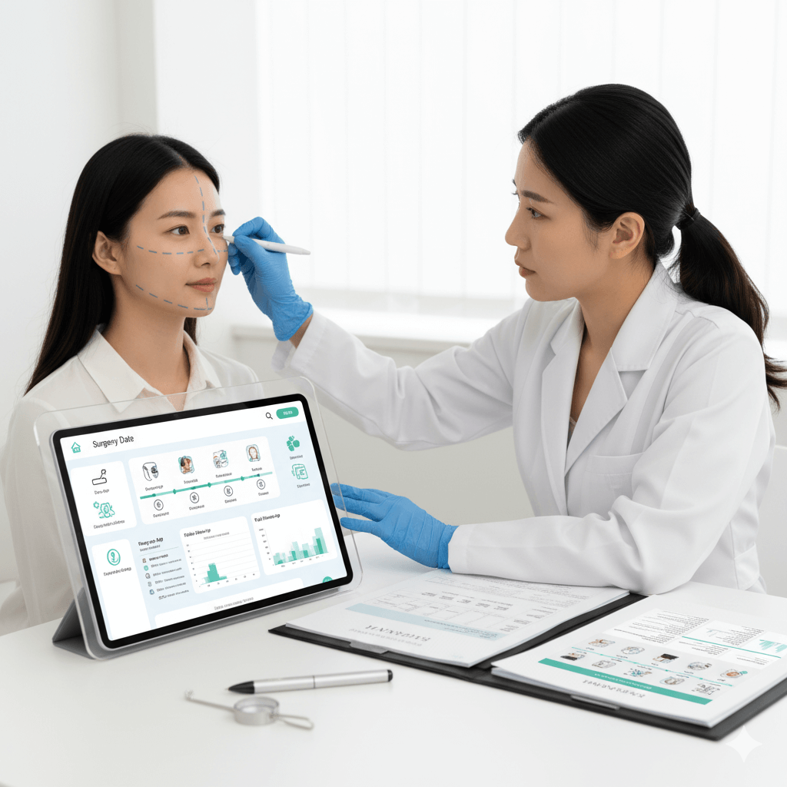

男性健康中心
男性健康的核心不是“尴尬”，而是效率与结果：把问题拆成可验证的指标，然后按路径解决。 我们用同一套逻辑：评估 → 选择 → 治疗/手术 → 复盘，让你清楚知道下一步是什么、要来韩多久、恢复到哪一步。


1) 男性体检与筛查（把“隐性风险”提前抓住）
适用：长期疲劳/睡眠差/体重上升/家族史/抽烟饮酒/长期久坐/计划备孕/40+ 常规体检升级。
核心项目（按需求组合）
- 代谢与心血管：血脂、血糖/糖化、血压、体成分与脂肪肝风险评估。
- 肝肾与炎症：肝肾功能、尿检、炎症指标（长期疲劳/反复不适时很关键）。
- 激素轴：睾酮相关评估（症状+化验结合解读，不只看一个数）。
- 前列腺：症状问卷 + 体检/影像（按需求），必要时 PSA 等。
- 生育：精液分析 + 男科评估（备孕效率的关键一步）。
我们会把检查结果翻译成“下一步选择”：观察？生活方式？药物？进一步检查？
2) 性功能与勃起功能障碍（ED）
ED = 勃起功能障碍。它经常是血管、神经、激素、心理压力、代谢问题的综合结果，不是“意志力不够”。
先分型：你属于哪一种（决定治疗路线）
- 血管型：动脉供血不足或静脉漏（常与代谢/抽烟/年龄相关）。
- 神经/损伤相关：手术史、糖尿病神经病变等。
- 激素相关：低睾酮、甲状腺等内分泌因素。
- 心理与压力型：焦虑、睡眠差、关系压力（常与其他因素叠加）。
治疗阶梯（从轻到重，清晰可选）
第一层：基础修复
- 睡眠与压力管理
- 体重/代谢改善
- 戒烟与运动处方
第二层：医学治疗
- 口服药物（医生评估）
- 局部/器械治疗（按适应证）
- 激素相关问题的规范处理
第三层：手术/高级方案
- 针对结构性问题的治疗
- 个体化手术方案（必要时）
- 恢复期与停留期明确规划
提示：你要的是“可持续有效”，不是一次性冲动。我们会把风险与收益讲清楚。
3) 前列腺与排尿症状（别拖到生活质量崩）
适用：尿频、尿急、夜尿、尿线变细、排尿等待、排不尽感、会阴不适等。
症状 → 检查 → 处理顺序
- 先排除感染与急症：尿检/必要检查。
- 再判断良性增生/炎症/其他因素：症状量表 + 影像/相关评估（按需求）。
- 治疗：生活方式与用药 → 需要时升级为手术/介入方案。
我们会把“什么时候该升级方案”写成明确阈值，避免长期拖延。
4) 男性生育力（备孕效率真正的加速器）
适用：备孕时间较长未成功、精液指标异常、反复流产需要双方共同评估、计划冻精/生育规划等。
核心：精液分析 + 男科评估（把原因找出来）
- 精液分析：数量、活力、形态等关键指标。
- 病因评估：精索静脉曲张、炎症、内分泌、生活方式等。
- 方案：生活方式 + 医学干预 + 必要时手术/辅助生殖路径对接。
5) 男科常见手术与微创（把恢复期讲清楚）
你最担心的通常不是“做不做”，而是：麻醉方式、恢复时间、是否影响工作与性生活、韩国停留多久。
常见手术方向（按需求定制）
- 精索静脉曲张：与生育力/不适相关时，评估后可考虑手术或介入方案。
- 包皮/龟头相关问题：按适应证与生活需求选择处理方式。
- 阴囊/附睾等常见问题：依据影像与症状决定保守或手术。
- 结构性功能问题：必要时进入更高阶方案（医生评估）。
麻醉与恢复（页面级“说明书”逻辑）
- 麻醉：局麻/镇静/全麻（取决于项目与医院规则）。
- 恢复：拆线/回诊节点、运动限制、性生活恢复窗口。
- 停留建议：把“最低停留天数 + 推荐停留天数”写出来，方便医疗观光计划。
之后你给我“所有手术注意事项文档”，我会做成统一弹窗/卡片模板。
6) 激素与代谢管理（男性“状态差”的底层原因）
适用：疲劳、动力下降、体脂上升、肌肉流失、睡眠变差、情绪易怒、性欲下降等。
先别急着“补”：先评估再决定
- 评估：症状 + 生活方式 + 化验指标综合判断。
- 优先修复：睡眠、压力、体重、运动与营养。
- 医学方案：由医生决定是否需要进一步治疗与随访监测。
允许转载：请注明出处。来源：汉江春天